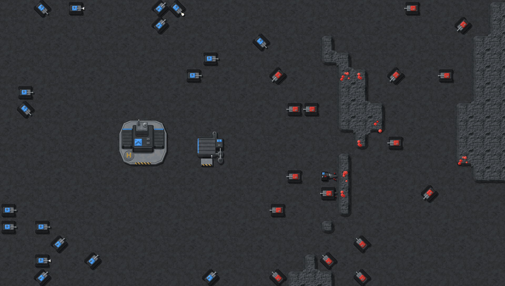
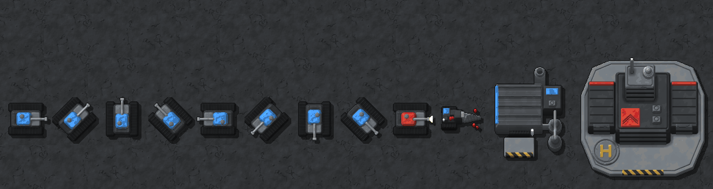

WAR-2D art: three finishes of the same models
Round 5. Same designs in all three; only the finish differs. Changes from round 4: the Miner's drill bit now lies sideways and reaches east into the rock face; the HQ is a bigger complex (podium, two wings, main block, tall command tower with a dish and an antenna mast) and every building is now drawn in a 3/4 view, so you see its lit roof and its shaded south walls, with window bands on the glass facades. Tanks and terrain are as you approved them.
APixel art, 32 px per tile
The round 3–4 finish: chunky pixels, limited palette, 1 px outline, hard shadows.

BFine pixel art, 64 px per tile
Still pixel art (limited palette, outline, hard shadows, no blending) but at twice the resolution, so the pixels are much smaller and details read clearly.


CSmooth, 64 px per tile
Not pixel art: smooth shading and anti-aliased edges, soft shadows (the Factorio-like finish from round 2).